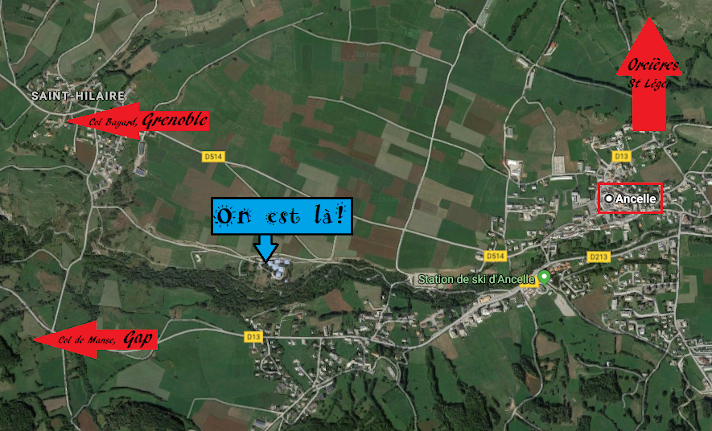

Qui Sommes-nous ?
La Belle Ânerie est une toute jeune entreprise (mais ses ânes connaissent la montagne depuis bien longtemps !). Elle est née en 2019 à mesure que se sont doucement fermées les portes de l’élevage du Sentier des Anes, après de belles et nombreuses années d'histoire locale à St Julien en Champsaur, laissant Marielle et Eric ses propriétaires se tourner vers de nouvelles aventures. C'est La Belle Ânerie qui s'invente alors, à Ancelle. C'est notre belle ânerie, pour prendre la suite, permettre aux ânes de rester ensemble, et de continuer à randonner (avec vous!) sur leur territoire.

Que faisons-nous ?
Nous proposons des randonnées libres et accompagnées avec des ânes bagagistes dans le Champsaur et le Parc National des Ecrins. Nous accueillons également des groupes d’enfants et d’adultes pour des ateliers de découverte des ânes, de rencontre et de contact avec eux, et de médiation animale avec des publics divers. La Belle Ânerie est située sur les terres de La Martégale, un grand centre de vacances où nos ânes vivent en pleine nature toute l’année. Ils entretiennent les bois, tondent les prairies, et s’intéressent curieusement à toutes les drôles d’activités des humains, pour le plus grand plaisir des enfants, les petits, les grands, les plus jeunes et les très vieux, les promeneurs du dimanche et les sportifs en herbe, ceux du centre, et tous les autres aussi. Balade de quelques heures en famille ou grande randonnée sur 7 jours avec plusieurs milliers de mètres de dénivelés positifs,... nos ânes seront vos compagnons dans toutes vos aventures! Ils sont toujours heureux de partir avec vous en vadrouille!
Où Sommes-nous ?
La Belle Anerie est installée à Ancelle, sur le plateau du Champsaur, dans les Hautes Alpes. Objectivement un des plus beaux coins de montagne du monde. A 20min de Gap et 1h45 de Grenoble. A 2h30 de Marseille et 7h de Paris. A 3h30 de Montpellier, 9h de Lille et 11h de Lorient, (information pour nos tendres ami.e.s lointains qui, on le sait, viendront un jour eux aussi nous rendre visite et partir visiter nos montagnes avec nos ânes)

On peut y aller quand ?
Les 7 ânes de la troupe (de 0 à 25ans!), et Pauline (un tout petit peu plus âgée…) vous accueillent du lundi au dimanche, dès les beaux jours et jusqu'aux premières neiges, sur réservation (prévenez de votre visite!). Hors conditions climatiques exceptionnelles (notion somme toute relative), nous sommes actifs de mi-Avril à fin Octobre. Les ânes seront ravis de vous rencontrer et de vous accompagner en balades et randonnées adaptées à chacun, à la découverte des chemins d'Ancelle et ses environs, du plateau du Champsaur aux crêtes des alentours, de quelques heures à plusieurs jours, c'est selon... c'est vous qui voyez, eux sauront toujours où mettre leurs pieds!